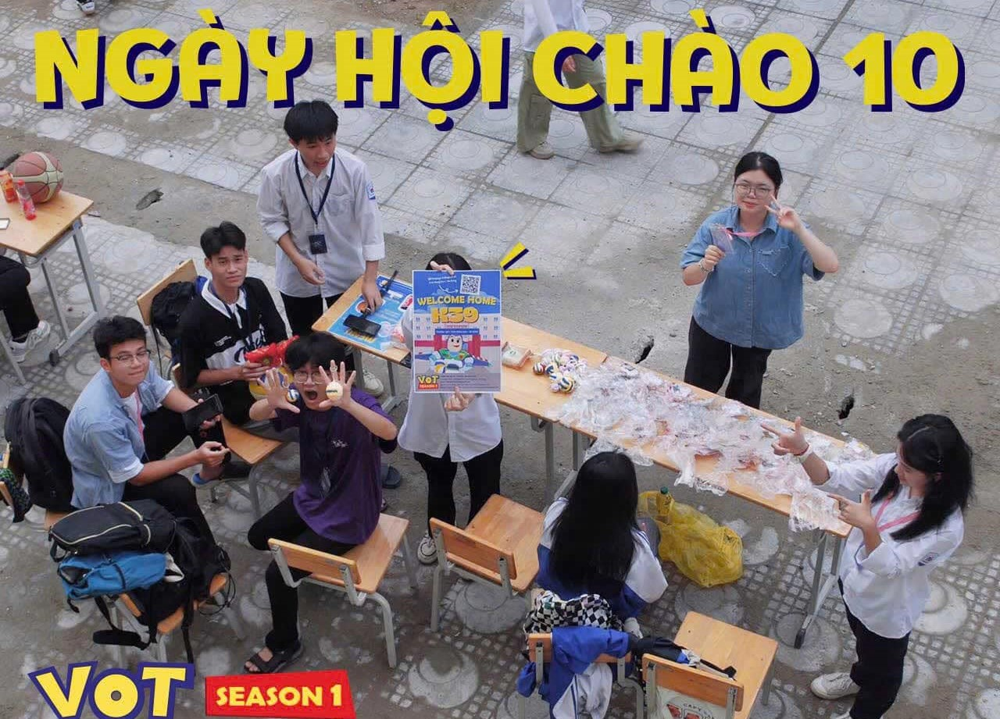
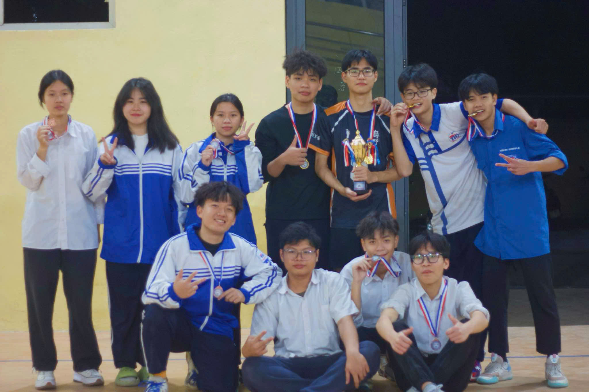
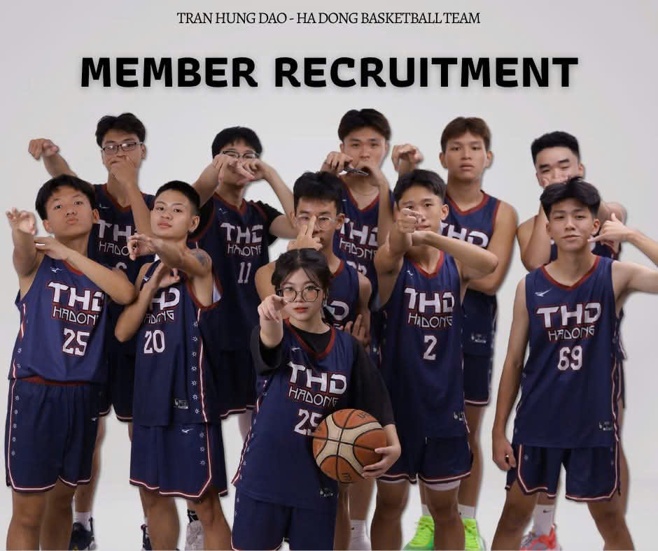
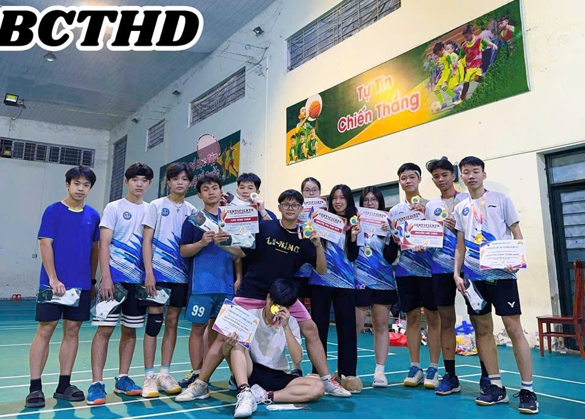
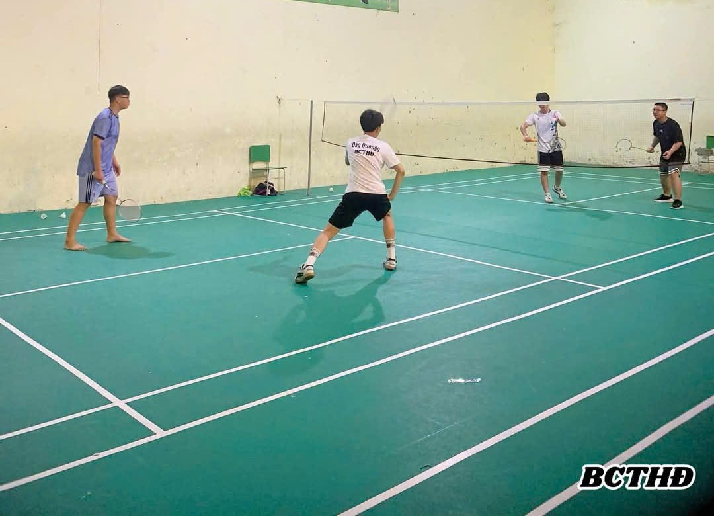

* CLB Bóng Chuyền (VOT)
I. GIỚI THIỆU VỀ CÂU LẠC BỘ:
- Volleyball of Tran Hung Dao - Ha Dong (VOT) là câu lạc bộ bóng chuyền trực thuộc trường THPT Trần Hưng Đạo - Hà Đông, thành lập từ năm 2023. Sau một mùa giải thành công với những bước tiến đáng kể, VOT tiếp tục mang đến tinh thần thể thao tràn đầy nhiệt huyết, hướng tới phát triển mạnh mẽ hơn nữa trong cộng đồng học sinh.
II. GIẢI MÃ CHỦ ĐỀ:
- Lấy cảm hứng từ nhân vật Woody trong bộ phim hoạt hình TOY STORY, VOT tràn đầy năng lượng nhiệt huyết - giống như Woody với tinh thần trách nhiệm và sự kiên định. Với phong cách lãnh đạo mạnh mẽ và khả năng gắn kết, VOT sẽ tiếp tục là điểm đến cho những bạn trẻ yêu bóng chuyền, sẵn sàng khẳng định niềm đam mê của mình.
III. ĐỐI TƯỢNG HƯỚNG ĐẾN
- Học sinh THPT trên địa bàn thành phố Hà Nội có sở thích và sự quan tâm đối với bộ môn Bóng chuyền.
- Các cá nhân, tổ chức có sự quan tâm đối với bộ môn Bóng chuyền và hoạt động của Câu lạc bộ.
IV. Ý NGHĨA & MỤC TIÊU:
- Tạo sân chơi thể thao lành mạnh, phát triển kỹ năng bóng chuyền và tinh thần đồng đội cho các bạn học sinh.
- Kết nối và giao lưu với các đội bóng chuyền trên địa bàn Thành phố Hà Nội.
- Khơi dậy tinh thần trách nhiệm, thúc đẩy niềm đam mê thể thao và phát triển văn hóa CLB vững mạnh.
 
* CLB Bóng Rổ
Câu lạc bộ bóng rổ (CLB bóng rổ) là một tổ chức thể thao được thành lập với mục đích phát triển và duy trì hoạt động chơi bóng rổ cho các thành viên. Những CLB này có thể hoạt động ở nhiều cấp độ khác nhau, từ nghiệp dư đến chuyên nghiệp, và thường tổ chức các buổi tập luyện, thi đấu, giải đấu và sự kiện giao lưu giữa các đội bóng.
Một số thông tin cơ bản về CLB bóng rổ:
Đào tạo và phát triển kỹ năng: Các CLB bóng rổ thường có các huấn luyện viên chuyên nghiệp hoặc bán chuyên để giúp các thành viên cải thiện kỹ năng cá nhân như rê bóng, ném rổ, phòng thủ và phối hợp nhóm.
Các giải đấu và thi đấu: Các CLB tổ chức các giải đấu nội bộ hoặc tham gia các giải đấu ngoài CLB để thi đấu với các đội bóng khác, giúp các thành viên có cơ hội cọ xát và nâng cao trình độ.
Giao lưu và kết nối cộng đồng: CLB bóng rổ cũng là nơi để các thành viên kết nối, học hỏi và giao lưu với những người yêu thích bóng rổ khác, tạo dựng tinh thần đồng đội và cải thiện sức khỏe.
Hợp tác với các tổ chức và nhà tài trợ: Một số CLB bóng rổ có thể hợp tác với các tổ chức, trường học hoặc các nhà tài trợ để phát triển.


* CLB Cầu Lông (BCTHĐ)
Bước vào giai đoạn mà có lẽ hết thảy học sinh ai cũng háo hức và mong đợi, không còn những ngày thức khuya dậy sớm, không còn những khoảnh khắc bù đầu bù cổ để làm bài tập hay vội ăn mẩu bánh mì rồi chạy hớt hải đi học. Mà giờ đây là lúc dòng thời gian trôi chậm lại, có thể là thưởng thức một bộ phim, nghiền ngẫm một mẩu chuyện hay tụ họp với bạn bè. Vậy tại sao chúng ta không biến nó thành một khoảng kí ức đẹp đẽ, bổ ích và ý nghĩa để sau này khi ta nhìn lại thì nó sẽ trở thành trang kí ức hoài niệm đẹp đẽ đáng nhớ nhất
Và chúng tôi ở đây để hiện thực hoá điều đó. Còn lại sẽ là sự lựa chọn từ bạn có đến với "Badminton Club of Tran Hung Đao- Ha Đong" hay ko?
Đây là Câu lạc bộ cầu lông đầu tiên và duy nhất tại Trường THPT Trần Hưng Đạo - Hà Đông.Và có tên là "Badminton Club of Tran Hung Đao - Ha Đong". Thành lập câu lạc bộ với sự đam mê, nhiệt huyết của tuổi trẻ nhằm tạo ra một sân chơi lành mạnh, vui vẻ, thoải mái nhưng đầy năng động. Nơi đây để gặp gỡ, giao lưu và kết nối niềm đam mê với bộ môn cầu lông.
Dẫn dắt và thành lập câu lạc bộ là bạn Nguyễn Thị Kim Huệ (Chủ Tịch CLB ) .Hiện tại câu lạc bộ có sự góp mặt của 25 thành viên là cựu học sinh và học sinh đang học tập tại trường.
Đến với chúng tôi ,bạn có thể quen biết thêm với nhiều bạn mới, cùng nhau luyện tập cầu lông sau những giờ học căng thẳng mệt mỏi nhưng không kém phần bổ ích. Với những trận đấu, có thể vừa luyện tập thể lực vừa nâng trình đánh cầu của bản thân. Đối với những bạn có niềm đam mê hứng thú với bộ môn cầu lông nhưng kĩ thuật lại chưa tốt thì cũng đừng quá lo lắng nhé. Clb chúng tôi luôn mở rộng cánh tay chào đón các bạn. Nên "Badminton Club of Tran Hung Đao - Ha Dong"sẽ là lựa chọn tuyệt vời của các bạn!
 